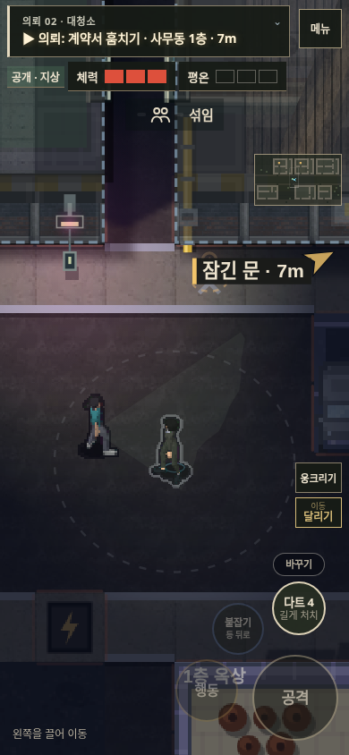
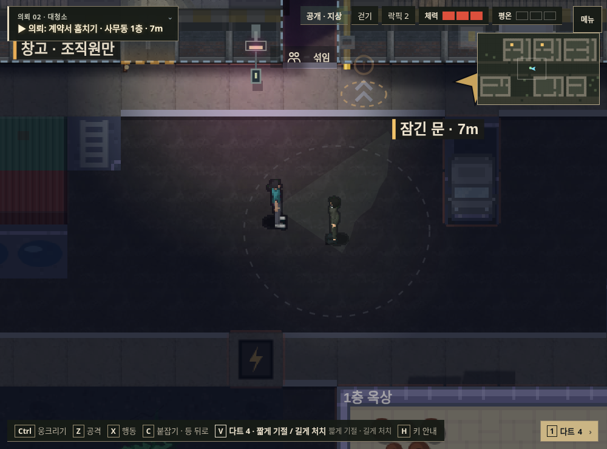
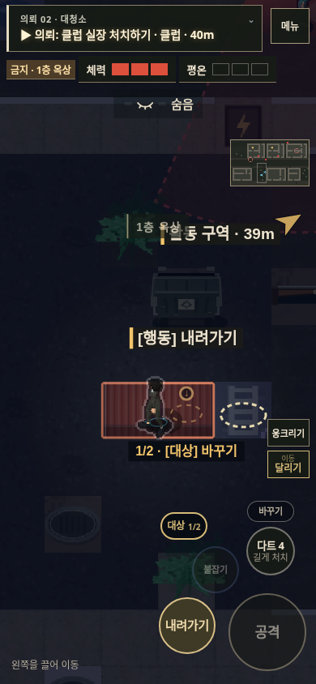
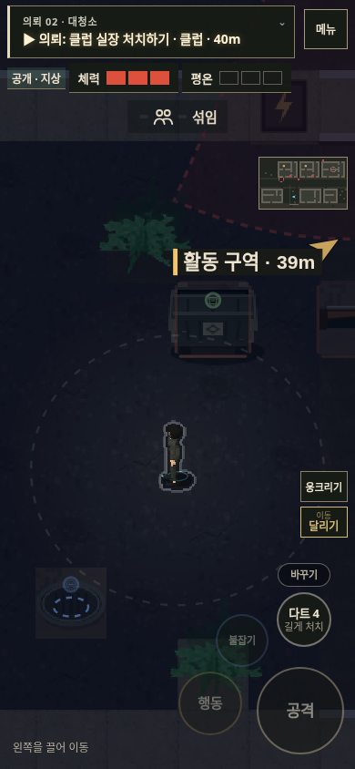
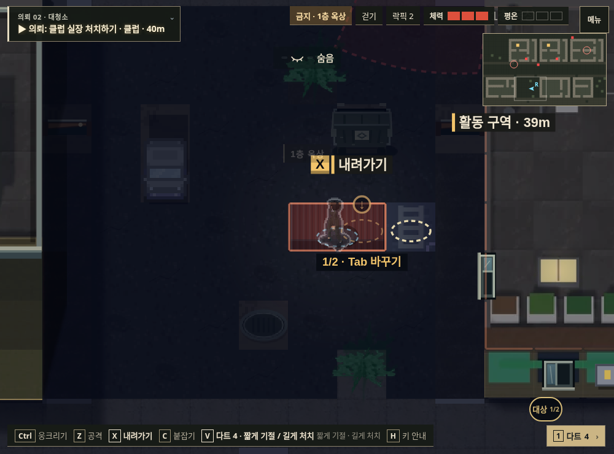
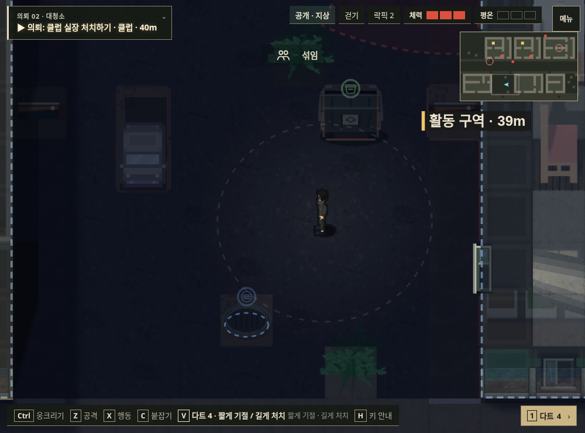

음식 준비 후 먼 문지기를 기다리던 동선을 식당 근처 경비로 바꿨습니다. 준비 직후 식사 주기 대기 없이 이동하며, 실제 NPC·카메라를 켠 배치 검사에서 화장실 도착까지 약 13.6초였습니다. 직접 제압하는 접근도 가능합니다.
실제 게임 렌더러에서 같은 인물·방향을 비교했습니다. 비교를 위해 인물과 시작 위치를 배치했으며, 일반 NPC 이동 중 장면과는 구분합니다.


그림과 충돌·오르내리기 판정을 함께 제거했습니다. 예전 저장에서 위에 있던 인물은 바닥으로 복원됩니다.




약국 → 식사 준비 → 화장실 제압·변장 → 장부 → 전화 유인 → 매복 → 표적 처치 → 탈출. 최종본은 게임 시간 약 155초, 체력 3으로 완료했습니다. 맵을 아는 자동 입력 검수이며 사람의 첫 플레이로 표현하지 않습니다. 아래는 캔버스 녹화라 HTML HUD는 빠져 있습니다.
건물·바닥·인물의 시점과 크기, 재질의 밀도, 조명과 그림자가 한 장면의 기준으로 묶이지 못했습니다. 작은 에셋과 기능을 계속 추가하면서 이 기준이 뒤로 밀렸습니다.
Shadow Tactics 공식 화면 · Commandos 2 공식 화면을 비교해, 고정 사선 2.5D 대표 구역을 먼저 만들고 벽 높이·입구·발 접점·조명을 함께 맞추는 방향을 제안합니다. 이번 배포가 그 전면 개편을 완료했다는 뜻은 아닙니다.